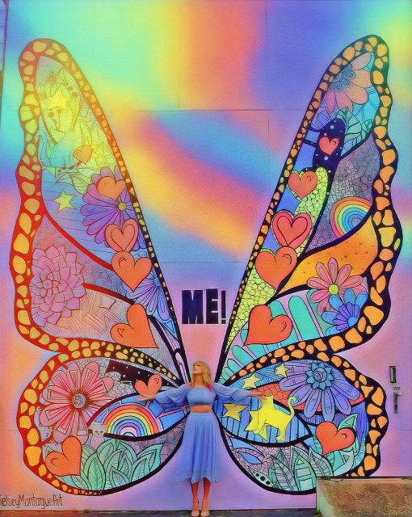

Neurodiverse Butterflies
"What makes a child gifted and talented may not always be good grades in school, but a different way of looking at the world and learning," -Chuck Grassley
"We should celebrate neurodiversity - the world would be poorer and life duller if we were all the same." -Neil Miliken
"Sometimes it is the people no one can imagine anything of who do the things no one can imagine," -Alan Turing, creator of the first computer used to break codes during WW II.
What we mean is...
The Neurodiverse community has been looked down on for as long as humans were alive. People don't seem to want to understand
that different people are not always a bad thing. No matter how a person looks or how differently their brain works, they should be able
to gain equal opportunities to jobs and independent activities when they are able, instead of being told that they cannot because of their genetics or conditions that they have no control over.
Our Mission
Neurodiverse Butterflies' is full of many useful peices of information on people of the neurodiverse community and their conditions
so that people will be more aware and want